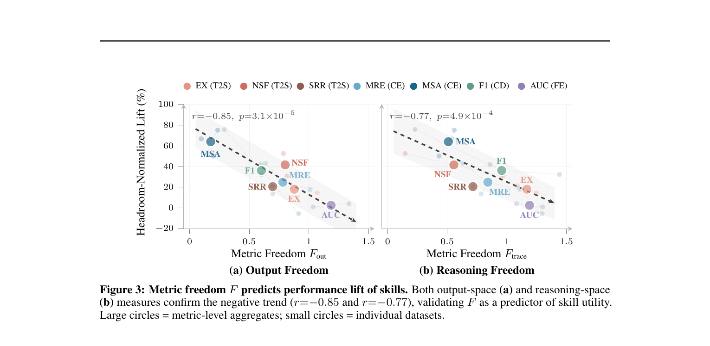
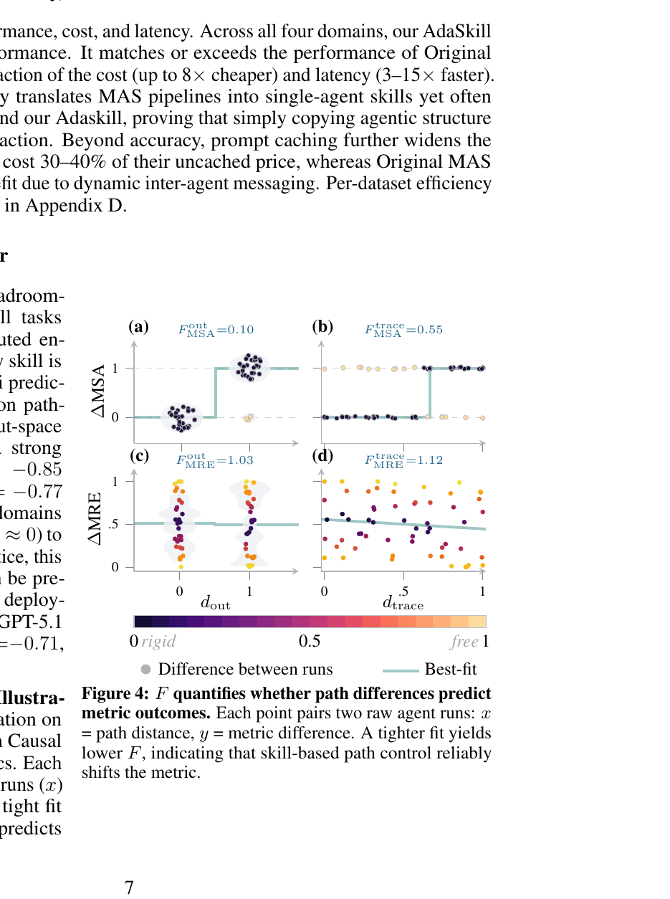
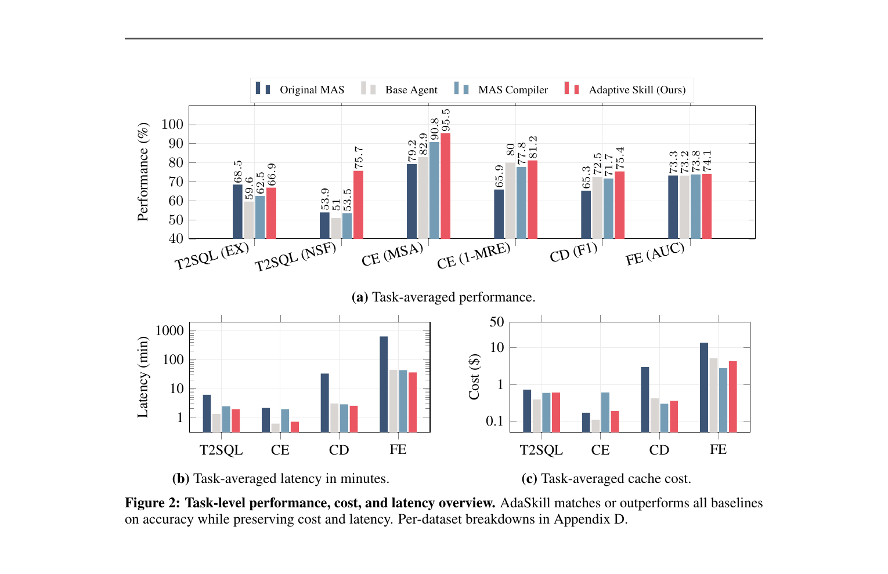
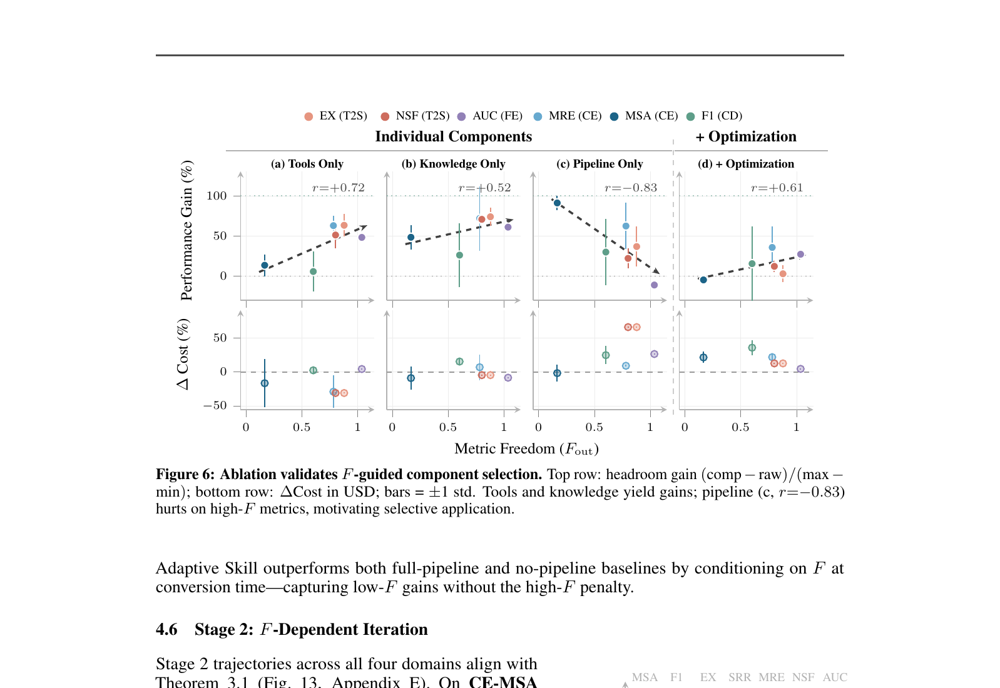

MAS is expensive
Multi-agent systems excel by specializing sub-agents, but pay for coordination overhead, context fragmentation, and brittle phase ordering.
arXiv:2604.01608 · 2026
Paper: From Multi-Agent to Single-Agent: When Is Skill Distillation Beneficial?
1The Chinese University of Hong Kong 2LIGHTSPEED, Tencent
Multi-agent systems (MAS) tackle complex tasks by distributing expertise, though this often comes at the cost of heavy coordination overhead, context fragmentation, and brittle phase ordering. Distilling a MAS into a single-agent skill can bypass these costs, but this conversion lacks a principled answer for when and what to distill. Instead, the empirical outcome is surprisingly inconsistent: skill lift ranges from a 28% improvement to a 2% degradation across metrics of the exact same task.
In this work, we reveal that skill utility is governed not by the task, but by the evaluation metric. We introduce Metric Freedom (F), the first a priori predictor of skill utility. F measures the topological rigidity of a metric’s scoring landscape by quantifying how output diversity couples with score variance via a Mantel test. Guided by F, we propose AdaSkill, a two-stage adaptive distillation framework. Stage 1 selectively extracts tools and knowledge while discarding restrictive structures on “free” metrics. Stage 2 applies iterative refinement selectively where the landscape is forgiving. Across 4 tasks, 11 datasets, and 6 metrics, F strongly predicts skill utility (r=−0.85, p<0.0001). AdaSkill matches or exceeds the original MAS while reducing cost up to 8× and latency by up to 15×.
Multi-agent systems excel by specializing sub-agents, but pay for coordination overhead, context fragmentation, and brittle phase ordering.
Faithfully compiling a MAS into a skill (MAS Compiler) often underperforms even the unskilled base agent—copying structure is not enough.
Prior work focuses on how to distill. We ask when and what to distill—and answer it with a metric-level criterion.
Not all evaluation metrics benefit equally from structured guidance. In causal estimation, Method Selection Accuracy (MSA) is all-or-nothing, whereas Mean Relative Error (MRE) rewards proximity to the ground truth. We formalize this via Metric Freedom (F): the topological decoupling between an agent’s behavioral variation and its score variation.
From n independent baseline runs, build pairwise distance matrices over behavior (outputs or traces) and scores. Apply a Mantel test (Spearman rank correlation rM). Then:
For Hölder-continuous scoring functions with non-negative concordance, any skill’s achievable lift is controlled by Metric Freedom:
As F → 1 the ceiling vanishes: distillation is fundamentally limited on free metrics. A phase-transition analysis further predicts that iterative refinement oscillates on low-F landscapes and converges on mid/high-F.


Distilling a MAS is a double-edged sword: structure guides reasoning but constrains exploration. AdaSkill imposes structural guidance only where the metric prefers a single standard answer.

Decompose the MAS into four component classes, then convert under F:
Closes residual headroom left by Stage 1’s conservative extraction. Only activated on mid/high-F metrics.

| Task | Datasets | Metrics | F regime | What we observe |
|---|---|---|---|---|
| Causal Estimation | QRData, Synthetic, Real | MSA, MRE | Low / High | Sharpest test: same skill yields +28pp under MSA but flat/negative under MRE. AdaSkill best on both metrics across datasets. |
| Text-to-SQL | BIRD-147, Spider-120 | EX, NSF | Mid (F≈0.50) | Moderate structure helps: best single-agent EX (+8.8pp / +5.8pp over raw) without MAS overhead. |
| Causal Discovery | AutoMPG, DWD, Sachs, Child | F1 | Low–Mid | Largest Stage 1 gain on lowest-F Sachs (F1 0.95, +8pp). Stage 2 recovers further on DWDClimate / Child. MAS up to 8× costlier with no consistent accuracy edge. |
| Feature Engineering | Taobao, Dia | AUC | High (F≈0.6–1.0) | Drop the pipeline entirely. Best mean AUC on Taobao (0.670) at lowest cost ($3.48 vs $11.46 MAS); latency ~10h → <35min. |
Tools and knowledge yield consistent gains across the F spectrum. Pipeline structure alone yields r=−0.83 with lift—and significantly raises cost via exploration taxes. Conditioning pipeline retention on F captures low-F gains without the high-F penalty.

Sweeping M∈[1,10] and N∈[3,12]: FMSA stabilizes once N≥5; FMRE stays high at all budgets. Operating point N=6, M=6 costs $6.12—a 2.5× saving vs. the full 10×10 grid. A diversity planner is essential: without it FMSA is underestimated by ~20%.
Low-F (CE-MSA): reaches 100% val by iter 2, then oscillates—fixing one failure breaks another. Mid-F (CD, T2SQL): monotonic gains (+14–15pp F1; EX→86.7%). High-F (FE): early plateau—little path-controllable headroom left.
From a handful of raw-agent runs—no skilled agent needed—predict whether skill engineering will pay off.
Tools are almost free capability. Pipeline rigidity should track F, not be copied wholesale from the MAS.
Stage 2 refinement helps mid/high-F metrics and hurts low-F ones. Disable iteration on knife-edge landscapes.
Code, evaluation runners, and distillation scripts live in the public repository.
git clone https://github.com/Tencent/AdaSkill.git
cd AdaSkill
# see README for environment setup and reproduction commands